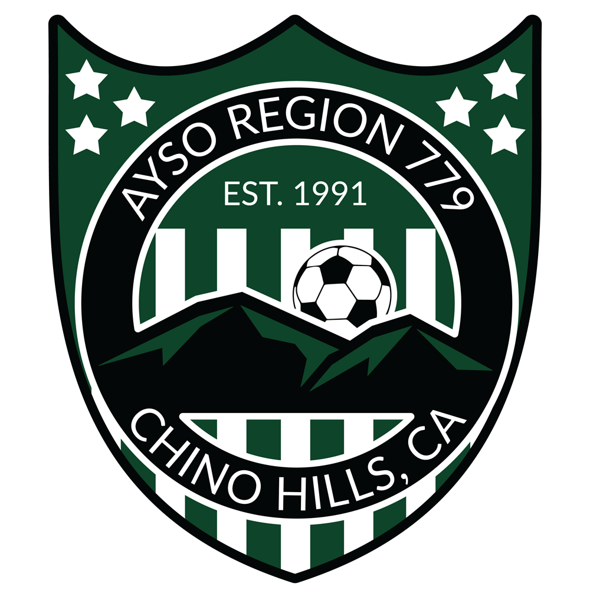

Soccer. Community. Excellence.
AYSO Region 779 • Chino Hills, CA • EST. 1991
Announcements
Uniform Selection & Pickup
Uniform selections are due by 3:00 PM on August 16 for all eligible teams. An email was sent with your selection link. If a team hasn’t submitted their choice by the deadline, we’ll move to the next team in line. Uniform pickup is expected to begin on Tuesday, August 18.
Team Parent Meeting
Teams please find your team parent. We will have a meeting at 6:00 PM at the Chino Hills Community Center. Here they will get info on how to be a team parent and some tips vendors to use.
Practice Start: For Teams With Coaches Only
Teams may begin practice on Monday, August 3rd. Coaches, please check in with the coordinator with your practice plan. This includes, time, location, and day you plan to practice.
Coach Needed: Meeting for Unassigned Teams
Teams that do not yet have a coach will meet on Thursday, August 13th at Chino Hills Community Park to discuss next steps. Games begin September 12th, and the schedule will be released soon. If you’re willing to coach, please contact your coordinator as soon as possible.
Coaches Meeting 'Team Distribution'
Teams with coaches will meet on Tuesday, July 28th at the Chino Hills Community Center at 5:15 PM for team distribution. Coaches will receive their team rosters and other important information for the upcoming season. Parents of Teams without coaches are encouraged to attend to help find a coach.
Welcome to AYSO 779 Fall 2026.
Our World Cup–inspired
season for 8U!
This year, we want the fields to feel alive with imagination, teamwork, and the joy that comes from playing the world's game. The World Cup brings countries together - and we want our 8U division to bring families, coaches, and players together in that same spirit.
But above all: this is your division.
Your kids. Your teams. Your ideas.
We're here to support you, guide you, and help you build the kind
of season you're proud of. If you have ideas, share them. If you
see something that can make the experience better, push it
forward. We want coaches, parents, and players to feel ownership
of this division — because when you feel connected, the kids feel
it too.
And here's our goal:
we want every child to have a successful season.
Success doesn't look the same for every kid.
For one player, success might be scoring a goal.
For another, it might be learning to dribble without looking
down.
For another, it might be finally feeling confident enough to take
a shot.
For some, success is simply loving soccer more at the end of the
season than they did at the start.
Whatever success means to your child, we want to help them get there.
We don't keep standings in 8U because the focus is on learning, teamwork, and joyful competition. Kids rotate positions, support one another, and get the freedom to experiment - dribble, pass, shoot, make mistakes, laugh, and try again. Every touch matters. Every moment matters. Every kid matters.
Everything we do follows AYSO's Six Philosophies:
Everyone Plays, Balanced Teams, Open Registration, Positive
Coaching, Good Sportsmanship, and Player Development.
These principles ensure every child gets meaningful playing time,
encouragement, and a chance to shine.
Fall 2026 is meant to feel special - a season full of creativity, confidence, and community. Let's build it together. Coaches, parents, players: your ideas shape this division. Let's make it unforgettable.